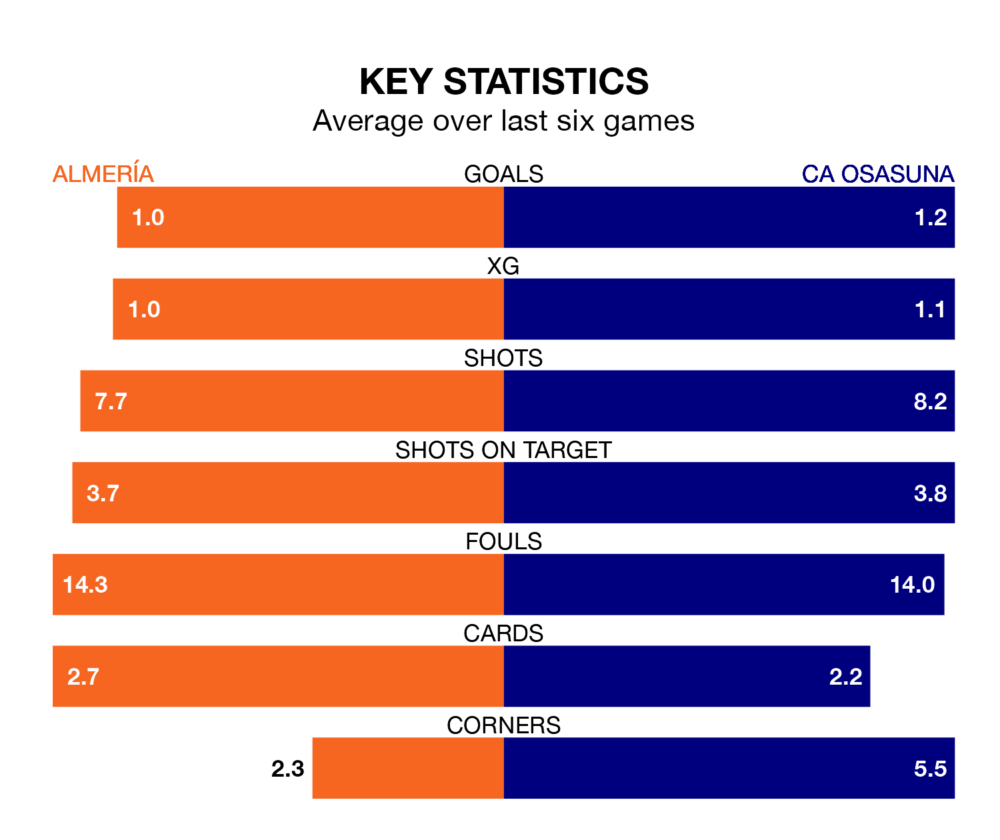

Struggling Almería face CA Osasuna at Power Horse Stadium Estadio de los Juegos Mediterráneos on Saturday looking to build on a win in their last league outing.
After securing all three points with a 1-0 victory over UD Las Palmas on March 17, Almería sit bottom of La Liga.
They travel to play an Osasuna side 12th in the standings, who lost in their last match, 4-2 against Real Madrid, on March 16.
In Ante Budimir, Osasuna have one of the league's most on-form strikers so far this season. He has notched 15 goals in 29 appearances, to sit second in the scoring charts.
His goal rate of one every 148 minutes is quicker than that of Sergio Arribas, Almería's top scorer with a goal every 293 minutes, and a total of six goals in 28 games.
In the last 10 years, Almería and Osasuna have played each other on 11 occasions. Almería won one of them, Osasuna eight, and they drew twice.
On average, Almería scored 0.5 goals and Osasuna 1.4 in those matches.
Their last meeting was on January 4, when Osasuna won 1-0 at home.
With 28 goals in 29 games so far this season, the hosts are scoring at below the league average rate with 1.0 goals per game. And they are conceding more than average, letting in 57 goals at a rate of 2.0 per game.
The away side are also below average scorers, with 1.1 goals per game, compared to a league average of 1.3. They have conceded 1.5 goals per game.
Almería are in mixed form in La Liga, with one win and four draws from their last six games.
With three wins and a draw over that period, Osasuna's form is better – they have taken 10 points from 18, compared to Almería's seven.
Updated: 12:16 (UTC), 25/03/24